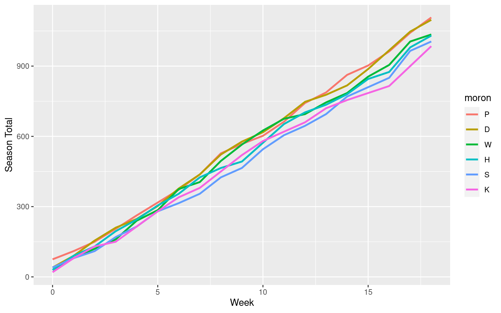

MBL2 2023: A Closer Look
The morons betting league (MBL2) is a small informal group of friends (morons) who compete every week by picking ten football bets (NCAAF and NFL) totaling 100 “units” against the spread and/or over-under. Here’s a small sample of the data. Note that
- The players (morons) are represented by one-letter codes.
- Some weeks may not have happened yet, so you may see a lot of missing (NA) data.
miais an indicator of whether the moron failed to enter their picks. According to the MBL2 rules a player is allowed to have one missed week replaced by their score from the subsequent week.- The listing of the teams/games and the line is very irregular because these are entered by hand with no standardization. For this reason, the league inforamtion (NCAAF vs NFL) is also unavailable. So the only useful data are the moron, week, number of units wagered, and number of units won.
Code
mbl |>
select(-cells) |>
slice_sample(n = 10) |>
arrange(week, moron)
# A tibble: 10 × 7
moron week mia team_s line wager units_won
<chr> <int> <lgl> <chr> <chr> <dbl> <dbl>
1 D 1 FALSE miss -6.5 10 10
2 K 2 FALSE JAX 3 10 0
3 S 3 FALSE LSU -17.5 10 0
4 P 4 FALSE LOU @ NCSU UNDER 55.5 10 10
5 D 6 FALSE Vols -3.5 10 10
6 W 6 FALSE JAX -4 10 10
7 K 9 FALSE PHI -3 10 10
8 S 10 FALSE ATL -1.5 10 0
9 S 11 FALSE CLE -4 10 0
10 K 18 FALSE <NA> <NA> NA NA
The next bit of code creates a result column (win, lose, or push) the wager and units_won columns.
Code
mbl <- mbl |>
mutate(
result = (units_won == wager) - (units_won == 0) + 2,
result = ifelse(is.na(result), 4, result),
result = c("lose", "push", "win", NA)[result])
The next bit of code creates a summary data frame of results by moron
and week. It uses tidyr::fill() to backfill the units won for weeks
where mia == TRUE.
Code
mbl_by_moron_week <- mbl |>
summarize(
wins = sum(result == "win"),
losses = sum(result == "lose"),
pushes = sum(result == "push"),
units_won = sum(units_won),
.by = c(moron, week, mia)
) |>
## Handle MIA weeks with tidyr::fill().
arrange(moron, week) |> # Making sure that observations are ordered correctly.
group_by(moron) |> # Grouping means filling done only within group (by moron).
fill(units_won, .direction = "up") |>
ungroup() |>
filter(!is.na(units_won)) |>
mutate(season_total = cumsum(units_won), .by = moron)
Here are some quantiles of the weekly units won by the morons. This is an attempt to determine what constitutes a good or bad weekly total.
Code
mbl_by_moron_week |> pull(units_won) |> quantile(probs = seq(0.1, 0.9, by = 0.1))
10% 20% 30% 40% 50% 60% 70% 80% 90%
31.25 40.00 40.00 45.00 50.00 60.00 60.00 70.00 75.00
And here is a histogram of the same information.
Code
## Histogram of weekly units won by the morons.
mbl_by_moron_week |>
ggplot(aes(x = units_won)) +
geom_histogram(binwidth = 10)
This is a line plot of the moron’s season totals by week.
Code
mbl_by_moron_week |>
ggplot(aes(x = week, y = season_total,
color = fct_reorder2(moron, week, season_total))) +
geom_line(linewidth = 1) +
labs(color = "moron", x = "Week", y = "Season Total")

How many weeks has each moron been one of the top scorers?
Code
mbl_by_moron_week |>
group_by(week) |>
mutate(
week_max = max(units_won),
top_scorer = (units_won == week_max)
) |>
ungroup() |>
filter(top_scorer) |>
summarize(n = n(), .by = moron) |>
arrange(desc(n))
# A tibble: 6 × 2
moron n
<chr> <int>
1 H 5
2 W 5
3 K 4
4 P 4
5 S 3
6 D 2
Which moron’s weekly totals are the most (and least) variable (ordered by standard deviation)?
Code
mbl_by_moron_week |>
summarize(mean = mean(units_won), sd = sd(units_won),
median = median(units_won), mad = mad(units_won),
.by = moron) |>
arrange(desc(sd))
# A tibble: 6 × 5
moron mean sd median mad
<chr> <dbl> <dbl> <dbl> <dbl>
1 W 53.4 21.3 50 22.2
2 K 49.1 17.1 55 22.2
3 P 56.4 17.0 55 22.2
4 H 52.8 16.7 50 18.5
5 S 50.6 15.5 42.5 11.1
6 D 55.5 15.3 55 22.2
Which moron’s weekly totals are the most (and least) variable (ordered by median absolute deviation)?
Code
mbl_by_moron_week |>
summarize(
mean = mean(units_won), sd = sd(units_won),
median = median(units_won), mad = mad(units_won),
.by = moron) |>
arrange(desc(mad), desc(sd))
# A tibble: 6 × 5
moron mean sd median mad
<chr> <dbl> <dbl> <dbl> <dbl>
1 W 53.4 21.3 50 22.2
2 K 49.1 17.1 55 22.2
3 P 56.4 17.0 55 22.2
4 D 55.5 15.3 55 22.2
5 H 52.8 16.7 50 18.5
6 S 50.6 15.5 42.5 11.1
Overall number of winning, losing, and pushed wagers for each moron. The stated win percentage counts pushes as half a win.
Code
mbl |>
filter(!is.na(result)) |>
summarize(n = n(), .by = c(moron, result)) |>
pivot_wider(names_from = result, values_from = n, values_fill = 0) |>
mutate(
n = win + push + lose,
win_pct = 100 * (win + 0.5*push) / n) |>
relocate(n, win, lose, push, .after = moron) |>
arrange(desc(win_pct))
# A tibble: 6 × 6
moron n win lose push win_pct
<chr> <int> <int> <int> <int> <dbl>
1 P 160 89 68 3 56.6
2 D 160 86 70 4 55
3 W 160 85 74 1 53.4
4 S 160 79 77 4 50.6
5 H 150 73 72 5 50.3
6 K 150 70 77 3 47.7
Do these morons know what they’re doing when they wager different amounts? The overall number of winning, losing, and pushed wagers by units wagered.
Code
mbl |>
filter(!is.na(result)) |>
summarize(n = n(), .by = c(wager, result)) |>
pivot_wider(names_from = result, values_from = n, values_fill = 0) |>
mutate(
n = win + push + lose,
win_pct = 100 * (win + 0.5*push) / n) |>
relocate(n, win, lose, push, .after = wager) |>
arrange(wager)
# A tibble: 4 × 6
wager n win lose push win_pct
<dbl> <int> <int> <int> <int> <dbl>
1 5 72 36 33 3 52.1
2 10 825 424 385 16 52.4
3 15 14 4 9 1 32.1
4 20 29 18 11 0 62.1
The overall percentages of winning, losing, and pushed wagers by units wagered.
Code
mbl |>
filter(!is.na(result)) |>
summarize(n = n(), .by = c(wager, result)) |>
pivot_wider(names_from = result, values_from = n, values_fill = 0) |>
mutate(
n = win + push + lose,
win = 100*win/n,
push = 100*push/n,
lose = 100*lose/n
) |>
relocate(n, win, lose, push, .after = wager) |>
arrange(wager)
# A tibble: 4 × 5
wager n win lose push
<dbl> <int> <dbl> <dbl> <dbl>
1 5 72 50 45.8 4.17
2 10 825 51.4 46.7 1.94
3 15 14 28.6 64.3 7.14
4 20 29 62.1 37.9 0
The overall percentages of wining, losing, and pushed wagers by units wagered for the individual morons. Note that some morons only ever bet in 10-unit increments.
Code
mbl |>
filter(!is.na(result)) |>
summarize(n = n(), .by = c(moron, wager, result)) |>
pivot_wider(names_from = result, values_from = n, values_fill = 0) |>
mutate(
n = win + push + lose,
win_pct = 100 * (win + 0.5*push) / n) |>
relocate(n, win, lose, push, .after = wager) |>
arrange(moron, wager) |>
print(n = Inf)
# A tibble: 15 × 7
moron wager n win lose push win_pct
<chr> <dbl> <int> <int> <int> <int> <dbl>
1 D 5 13 4 8 1 34.6
2 D 10 140 79 58 3 57.5
3 D 15 1 0 1 0 0
4 D 20 6 3 3 0 50
5 H 5 23 10 11 2 47.8
6 H 10 114 56 55 3 50.4
7 H 15 3 1 2 0 33.3
8 H 20 10 6 4 0 60
9 K 10 150 70 77 3 47.7
10 P 5 36 22 14 0 61.1
11 P 10 101 55 44 2 55.4
12 P 15 10 3 6 1 35
13 P 20 13 9 4 0 69.2
14 S 10 160 79 77 4 50.6
15 W 10 160 85 74 1 53.4
Brett Presnell
Associate Professor of Statistics
My research interests include nonparametric and computationally intensive statistics, model misspecification, statistical computing, and the analysis of directional data.